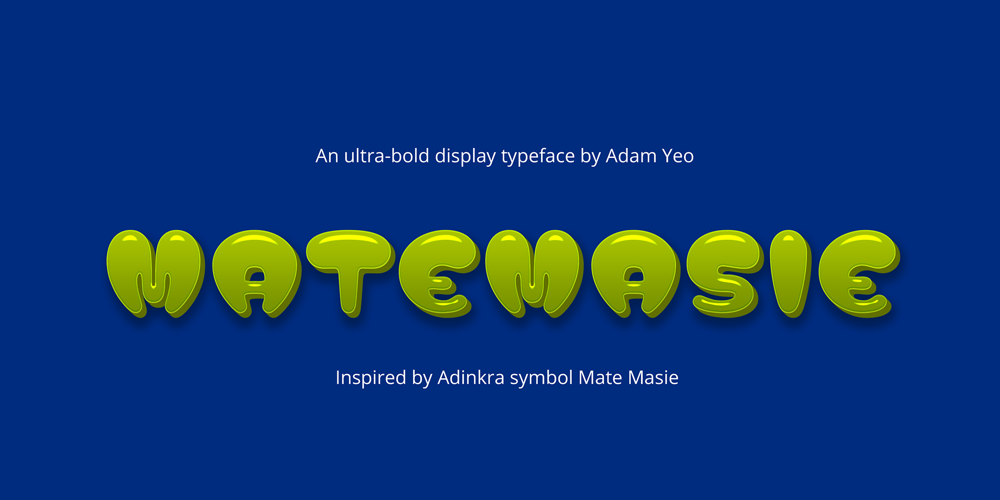
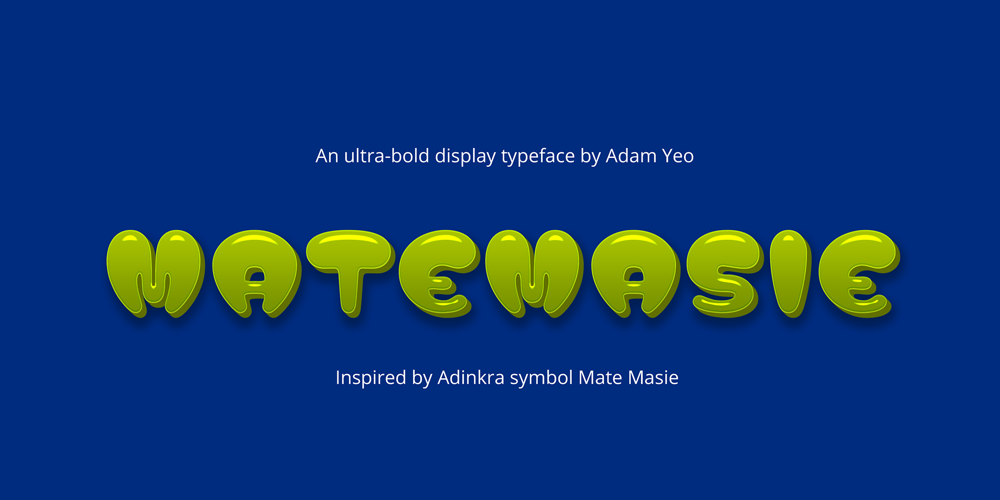

Matemasie is an ultra-bold display typeface distinguished by rounded edges and top-weighted letterforms. It is inspired by the Adinkra symbol "Mate Masie," meaning "what I hear, I keep" — embodying the importance of listening and communication in oral traditions. The typeface symbolizes the principles of communication, wisdom, knowledge, prudence, and connection.
The goal of the typeface is a celebration of African heritage while meeting contemporary design standards. Adinkra symbols express themes connected to the history, beliefs, and philosophy of the Asante people, often with proverbial meanings that signify wisdom. These symbols also describe historical events, human and animal behavior, plant forms, and object shapes.
Drawing on this Adinkra symbol, the design connects with Africa's rich graphical heritage. The creation of Matemasie was a journey to craft a typeface that resonates with the spirit of Africa, drawing deeply from its roots.
The design process involved connecting the past and present, preserving the essence of African heritage for future generations. Matemasie celebrates the harmony between tradition and innovation, reflecting the balance embodied by the "Mate Masie" symbol.
Traditionally, the Mate Masie symbol is represented by four linked ears—two on top and two on the bottom. This 2-by-2 arrangement is a fundamental aspect of the symbol, signifying balance and rhythm, when it is presented in traditional designs. This rhythmic balance played a crucial role in developing the letterforms of the Matemasie font. By integrating this cultural structure into the digital design, Matemasie stays deeply connected to its cultural roots, preserving the essence of the symbol while adapting it for contemporary use.
The design process aimed to respect and reflect the traditional symbolism, allowing the modern typeface to serve as both a functional tool and a cultural tribute. The typeface captures both the artistic and spiritual essence of "Mate Masie" through its unique typographic features.
Matemasie is more than a collection of letters; it is a testament to the rich mosaic of African culture and tradition. Like the symbol that inspired it, Matemasie whispers stories of ancient wisdom and caution through its elegant curves. It is hoped that Matemasie's story will continue to evolve with various styles, inspiring typographers to explore the depths of African culture and wisdom.
 
